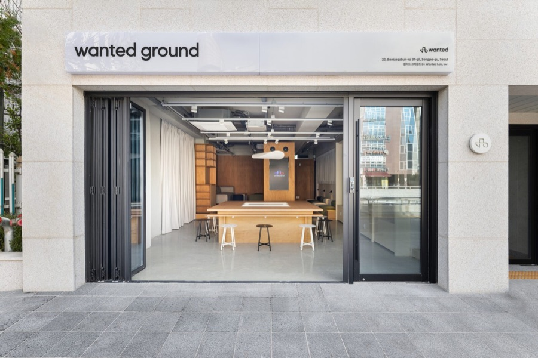

AI 써야 한다는 건 아는데 내 직군에 어떻게 적용해야 할지 아무도 알려주질 않아요.
수강료 0원 · 매월 최대 80만원 지급 · 선착순 35명
부트캠프 수료도 했고 포트폴리오도 만들었는데
많은 취업 준비생분들이 교육을 수료한 이후에도
기업이 원하는 수준의 결과물과 실무 역량을 충분히 보여주는 것에 어려움을 겪고 있습니다.
AI 써야 한다는 건 아는데 내 직군에 어떻게 적용해야 할지 아무도 알려주질 않아요.
포트폴리오를 다시 만들어야 한다는 건 알겠는데
어디서부터 시작해야 할지도 모르겠고 혼자 하기엔 한계가 있어요.
부트캠프 수료하고 포트폴리오도 만들었는데 면접에서 항상 ‘실무 경험이 부족하다’는 말을 들어요.
이력서 100장 넘게 넣었는데 서류에서 계속 떨어져요. 뭘 더 해야 할지 모르겠어요.
프론티어즈의 차별점

프론티어즈는 또 하나의 교육 과정이 아닙니다.
현직자와 함께 AI를 활용한 실전 프로젝트를 수행하며,
포트폴리오 완성과 취업 지원을 통해 취업 경쟁력을
갖출 수 있도록 설계한 커리어 캠프입니다.

기업이 확인하는 것
기업은 더 이상 수료증을 보지 않습니다. AI를 활용해 어떤 문제를 해결했는지, 어떤 결과물을 만들었는지를 확인합니다.
같은 방식으로 준비하면 결과도 달라지지 않습니다.
지금 필요한 것은 또 다른 강의가 아니라 AI를 활용한 실전 경험과 결과물입니다.
프론티어즈 과정 한눈에 보기
4번의 AI 실전 파트, 현직자 1:1 멘토링, 직군 맞춤 AX 포트폴리오까지 취업 완성에 필요한 모든 것을 커리어 캠프에서 갖추세요.
총 4번의 실전 파트로 직접 만들며 AI를 익힙니다.
원티드랩 현직자의 시각으로 내 포트폴리오를 검증받습니다.
기업에서 관심 갖는 결과물이 손에 남습니다.
이력서·면접·포지션 추천까지 원티드가 함께합니다.
수강생 혜택
최대 320만 원
매월 최대 80만원 지급, 교육 기간 동안 취업 준비에 집중할 수 있도록 지원합니다.
4개월 무상 대여
장비 걱정은 내려놓으세요. 교육 기간 내내 고사양 노트북을 무상으로 사용할 수 있습니다.
취업 준비 완성을 위한
전담 커리어 코치의 특강, 1:1 코칭으로 취업까지 완성해 보세요.
AI 툴 전면 지원
Claude PRO·MAX, Ennoia, Think Code까지 포트폴리오 완성에 필요한 AI 툴을 모두 지원합니다.
유료 강의 무상 제공
Claude 활용법부터 실무 적용까지 단계별로 학습할 수 있는 유료 강의를 무상으로 제공합니다.
강사, 멘토진 소개
AX를 구현하는 기준은 강사에게 배우고, 내 업무에 맞게 적용하는 방식은 멘토와 함께 점검합니다.
강의에서 실무 구조를 익히고, 멘토링에서는 산출물에 대한 피드백과 함께 지금의 업무방식, 앞으로의 성장 방향과 커리어 고민을 함께 정리해나갑니다.
김대영
프론티어즈 강사
현) 이끔 기술이사, AI 개발 서비스 Think Code 운영
전) JYP엔터테인먼트, AI·업무 자동화 시스템 구축
전) RSQUARE, 데이터 엔지니어링·자동화 파이프라인 구축
강의 및 활동 이력
정기수
AI 멘토
원티드랩 AI 부문장
전환이 실제 업무 방식의 변화로 이어질 수 있도록, AI 관점에서 실무 적용의 방향과 기준을 제시합니다.
김티어
PO 멘토
원티드랩 PO 부문장
전환이 실제 업무 방식의 변화로 이어질 수 있도록, AI 관점에서 실무 적용의 방향과 기준을 제시합니다.
김티어
개발 멘토
원티드랩 개발 팀장
전환이 실제 업무 방식의 변화로 이어질 수 있도록, AI 관점에서 실무 적용의 방향과 기준을 제시합니다.
김티어
디자인 멘토
원티드랩 디자인 팀장
전환이 실제 업무 방식의 변화로 이어질 수 있도록, AI 관점에서 실무 적용의 방향과 기준을 제시합니다.
김티어
마케팅 멘토
원티드랩 마케팅 파트장
전환이 실제 업무 방식의 변화로 이어질 수 있도록, AI 관점에서 실무 적용의 방향과 기준을 제시합니다.
김티어
HR 멘토
원티드랩 HR 팀장
전환이 실제 업무 방식의 변화로 이어질 수 있도록, AI 관점에서 실무 적용의 방향과 기준을 제시합니다.
취업을 목표로 설계한
1단계 · 1 – 2주차
내용
내 직군에서 AI를 어떻게 써야 하는지 방향을 잡는 2주입니다. 원티드랩 현직자가 직접 들려주는 직군별 AI 활용 사례로 시작해 취업 장벽 진단과 희망 직군 탐색까지 함께 진행합니다.
산출물
예시
프롬프트 설계·문서 작성·포트폴리오 보완까지
16주 내내 가장 많이 쓰게 될 핵심 AI 도구입니다.
원티드랩이 만든 AI 에이전트 플랫폼입니다.
온프레미스 기반으로 민감한 데이터를 안전하게 관리하며 사내 데이터를 학습한 나만의 AI 에이전트를 직접 구축할 수 있습니다.
환경 설치 없이 브라우저 하나로 강사와 같은 코드 위에서 실시간으로 코딩 수업에 참여할 수 있는 협업 플랫폼입니다. AI 코드 피드백으로 수업 외 시간에도 혼자 학습할 수 있습니다.
AI 교육은 많습니다. 하지만 끝까지 완성시키는 과정은 많지 않습니다. 프론티어즈는 단순히 AI를 배우는 교육이 아닙니다.
16주 동안 현직자 멘토링과 프로젝트 수행을 통해 실무 수준의 포트폴리오를 완성하고, 취업 준비까지 이어질 수 있도록 설계했습니다.
연 300명+
고용노동부 K-Digital Training 공식 훈련기관으로 매년 300명 이상의 IT·AI 인재를 양성하고 있습니다.
완주율 88%
끝까지 완주할 수 있도록 설계된 커리큘럼과 운영 경험을 보유하고 있습니다.
취업 지원
배움에서 끝나지 않고 실제 취업까지 이어질 수 있도록 지원합니다.
참가 자격
아래 조건을 모두 충족하는 분만 지원 가능합니다.
교육 안내
지원 절차
STEP 1
온라인 지원
하단 지원하기 버튼을 눌러 신청서를 제출해주세요.
정원 마감 시 조기 종료될 수 있습니다.
STEP 2
온라인 인터뷰
지원서 검토 후 개별 연락드립니다.
참여 의지와 직무 방향을 함께 확인합니다.
STEP 3
최종 합격 발표
합격자에 한해 개별 안내드립니다.
STEP 4
교육 시작
2026년 7월 13일(월) 개강
PO·개발·디자인·마케팅·HR 직무 취업을 희망하는 구직 청년에게 적합한 프로그램입니다.
특히 직무 교육이나 부트캠프를 수료했지만 아직 취업에 도달하지 못한 분, 실무 수준의 포트폴리오가 없어 막막한 분께 추천드립니다.
프론티어즈는 직무 교육을 다시 제공하는 과정이 아닙니다.
이미 직무 학습을 마친 분들이 AI를 활용해 실무 수준의 포트폴리오를 완성하고 취업 경쟁력을 높일 수 있도록 설계된 과정입니다.
아래 조건을 모두 충족하셔야 합니다.
자격 증빙 서류는 합격 후 제출하시면 됩니다. 지원 단계에서는 본인 확인만으로 진행됩니다.
수강료는 전액 무료이며 매월 출석률에 따라 최대 80만원 수당을 지급해드립니다.
또한 참가자에게는 노트북, AI 툴도 모두 무상으로 지원됩니다.
네, 월~금 오전 10시부터 오후 7시까지 풀타임으로 참여하셔야 합니다.
참여 의지가 확실한 분께 지원을 권장드립니다.
네, 가능합니다. 프론티어즈는 AI 툴 사용법부터 단계적으로 배우는 과정입니다.
개발 지식이나 AI 경험이 없어도 충분히 따라오실 수 있도록 설계되어 있습니다.
아래 연락처로 문의 부탁드립니다.